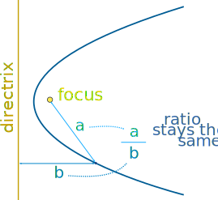
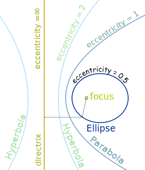
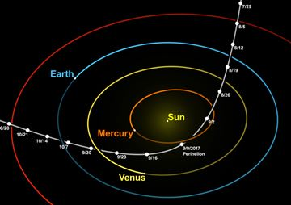
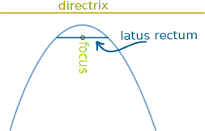
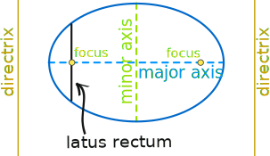
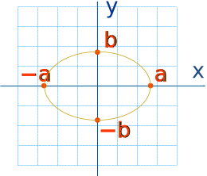

Conic Sections
Conic Section: a section (or slice) through a cone.

So all those curves are related.
Focus!

The curves can also be defined using a straight line (the directrix) and a point (the focus).
When we measure the distance:
- from the focus to any point on the curve, and
- perpendicularly from the directrix to that point
the two distances will always have the same ratio.
- For an ellipse, the ratio is less than 1
- For a parabola, the ratio is 1 (so the two distances are equal)
- For a hyperbola, the ratio is greater than 1
That ratio is called the eccentricity. Play with it here:
Eccentricity
We can say that any conic section is:
"all points whose distance to the focus is equal
to
the eccentricity times the distance to the directrix"

For:
- 0 < eccentricity < 1 we get an ellipse,
- eccentricity = 1 a parabola, and
- eccentricity > 1 a hyperbola.
A circle has an eccentricity of zero, so the eccentricity shows us how "un-circular" the curve is. The bigger the eccentricity, the less curved it is.
Example: Orbits have an eccentricity less than 1
An eccentricity above 1 is is not really an orbit as it does not loop back, but passes by.
Artist's Impression of 'Oumuamua
Credit: ESO/M. Kornmesser
The interstellar asteroid 'Oumuamua has an eccentricity of about 1.2 in it's path around the Sun, meaning it is not part of our solar system:

Credit: Wikpedia authors nagualdesign and Tomruen
The orbit of Earth has an eccentricity of about 0.0167 (nearly a circle)
The orbit of Mars has an eccentricity of about 0.0934 (a little less circular)
Latus Rectum

The latus rectum (no, it is not a rude word!) runs parallel to the directrix and passes through the focus. Its length:
- In a parabola, is four times the focal length
- In a circle, is the diameter
- In an ellipse, is 2b2/a (where a and b are one half of the major and minor diameter).

Here is the major axis and minor axis of an ellipse.
There is a focus and directrix on each side (ie a pair of them).
Equations

When placed like this on an x-y graph, the equation for an ellipse is:
x2a2 + y2b2 = 1
The special case of a circle (where radius=a=b) is:
x2a2 + y2a2 = 1

And for a hyperbola it is:
x2a2 − y2b2 = 1
General Equation
We can make an equation that covers all these curves.
Because they are plane curves (even though cut out of the solid) we only have to deal with Cartesian ("x" and "y") Coordinates.
But these are not straight lines, so just "x" and "y" will not do ... we need to go to the next level, and have:
- x2 and y2,
- and also x (without y), y (without x),
- x and y together (xy)
- and a constant term.
There, that should do it!
Give each one a factor (A,B,C etc) and we get a general equation that covers all conic sections:
From that equation we can create equations for the circle, ellipse, parabola and hyperbola.